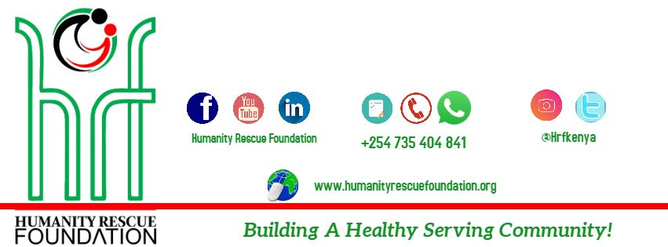

Humanity Rescue Foundation
Humanity Rescue Foundation (HRF) is a Kenyan based NGO providing a wide range of social-economic solutions to the criminal justice system, persons living with sickle cell anaemia and individuals, groups and communities that need mentorship .

Charity Connect
Want to give back but don’t know where to start? We connect you to the amazing founders of vetted charitable initiatives in Kenya that you can trust. Join us on our #kindnessmission! Volunteer, donate, give - every effort counts, no matter how small.